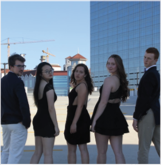

MEET THE ADVISORS

Advisor
Lovett '19 | SMGT, PSYCH | Burleson, TX
Sugar, spice, and everything Rice! These were the ingredients chosen to make the perfect Advisor, Bailey Douglas. This fine femenina
hails from Burleson, TX, the hometown of Kelly Clarkson and the Douglas Family Menagerie™, which includes a pony, a bull terrier,
and countless (decorative) owls. Just this year she’s leveled up from being a member of Super Mega Weenie Hut Junior to a college
senior. This Psychology and Sport Management double major will always be there for you and never fail to make you smile. She’s one
of the goofiest people you’ll ever meet, and will probably still be dabbing long into old age. Also, call her B-Duggs if you #real. Bailey
loves sharing Rice through the Student Admission Council and supporting Lovett as a social (she plans the parties). She stays catho-lit
as a member of the Rice Catholic Student Association, keeps it bumpin’ as an IM volleyball player, and is an OG baller in the Rice
Sport Business Society. In fact, she spent this past summer interning with a record label in New York! While she might sound busy, she
always has time for what counts: her friends. If Bailey’s your Advisor, you’re already the luckiest New Student out there
- Arabella Jenkins (Lovett '19)
Advisor
Lovett '20 | MECH | Louisville, KY
According to Lovett lore, Luke Eugene Howe-Kerr was born from the frigid water of a Colorado mountain stream which promptly
swept him downriver--after a brief hiatus in Pueblo, “the armpit of Colorado”--to his parents doorstep in Louisville, Kentucky. His first
words laying there wet on his parents’ welcome mat were “Teslas are the safest cars ever designed” followed quickly by “Beer Bike needs
reform.” This junior Mechanical Engineering major can talk your ear off about Tesla and SpaceX (wow, it’s almost like that’s his O-Week
group’s name or something). He is as enthusiastic about obsessing over rockets and biking, being on the Rice rocketry team, and being
a manager at Rice Bikes, as he is about goofing around with his friends and knowing all the words to Fergalicious. This mountain goat
of a man really is one of the sweetest guys you will ever meet. With his dad shirts and dad jokes, Luke is the ultimate dad: like a good
father, he is extraordinarily sincere in his kindness, enthusiastic about life and having fun, always there for you when you need him,
and always ready to embarrass you in public!
- Collin Allen and Bailey Covell (Lovett '20)
Co-Advisor
Wiess '19 | CHBE | Waco, TX
The mystery of Waco… 23 original flavors combine to form one of Texas’ finest productions. While also invented in Waco, we are
not talking about Dr. Pepper, but instead one of its finest gentlemen, Riley Gardell (aka RiMan9). This Wiess rising senior majoring
in Chemical Engineering can often be seen playing intramural sports, showing off his unorthodox yet impressive dance moves, and
getting famous in the papers. Ask anyone in Chi Alpha (the Christian ministry he is involved with) and they’ll tell you about how fun
it is to be around Riley - he’s the ultimate goofball who also has the ability to get really deep, reflective and thoughtful at a moment’s
notice. When you look beyond his luscious red hair and tall stature, you find a friend full of love for Jesus and the people around him.
Knowing him for the past few years, he brings joy to the hearts of all like no other, and can turn any frown upside-down in no time at
all. Riley is one of the most friendly and genuine people you will ever meet, and he is truly one of a kind.
- Jacob Song and Alejandro Estrada (Wiess '19)
Advisor
Lovett '21 | MANA, KINE | Lilburn, GA
Wow, you’re one lucky New Student if you’ve landed Judy Liu as your Advisor. From Lilburn, Georgia, this hard working sophomore
is a Kinesiology and Managerial Studies double major from Lovett College who can seriously throw some shade if she’s feeling a little
salty. You don’t really find her in Lovett since she is too busy selling boba in Sammy’s at our very own East West Tea, translating for
companies with her knowledge of 17959238 languages, fighting for student legislations in Senate, studying accounting in Fondren,
or serving looks to all the boys. I mean she’s appeared on Rice Missed Encounters 5+ times within 1 year…so if you want to win her
heart, good luck with all that competition. If you need a shoulder or open ear, she’s the person to go to. If you are looking for tips to
try to convince your parents to accept the fact that you’re no longer pre-med, she’s your gal. If you want to get those gains in the gym,
she’s the one. If you long for an all-nighter buddy, you’ve found that in Judy! Treasure this beauty because she’s the best, best friend that
anyone could ever have. Call her nemo.
- Annie Shen (Jones '19)

Diversity Facilitator
Baker '21 | SOPA, PLST | San Antonio, TX
Diana De La Torre Pinedo is: kindness, laughter, binge-watching Netflix, finding free food, jamming to Hamilton, speaking two
languages and learning another, civic engagement, and friendship! Diana is originally from Mexico City, Mexico but now lives in San
Antonio (and at Baker College). Diana is one of the most caring, selfless, and generous people you’ll ever meet, always putting others
first. She’s a sophomore studying Social Policy Analysis with a minor in Politics, Law, and Social Thought who’s also pursuing the
Certificate for Language and Intercultural Communication. She’s a counselor at Camp Kesem, a volunteer for Rice All Stars, a member
of Civic Duty, Rice American Association for University Women, and HACER. Basically, she’s your own personal Leslie Knope, but
somehow even better. As her roommate, I can tell you two things. First, she talks in her sleep, and second, you’re so, so lucky to have
her as your Co-Advisor
- Allsion Yelvington (Baker '20)